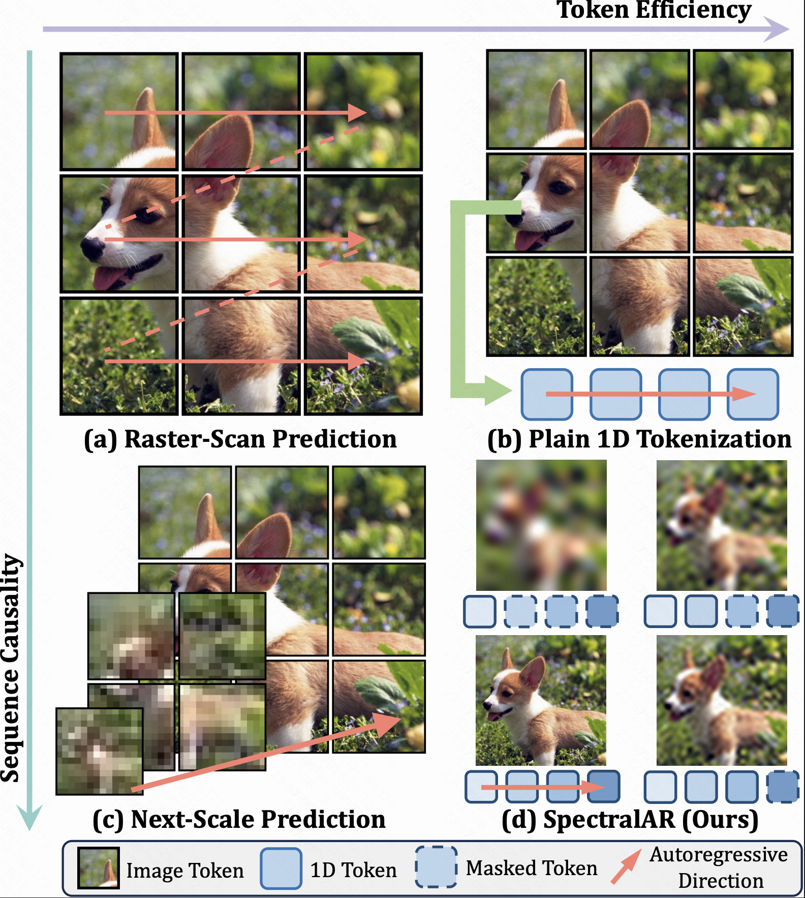
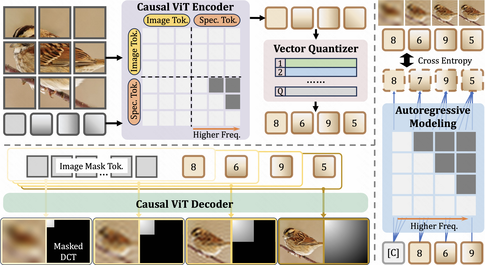
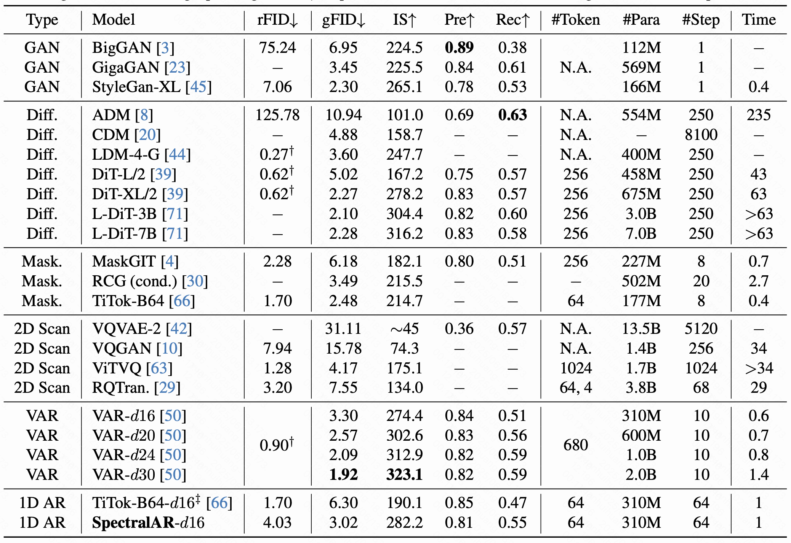

Overview of our contributions. Autoregressive visual generation has garnered increasing attention due to its scalability and compatibility with other modalities compared with diffusion models. Most existing methods construct visual sequences as spatial patches for autoregressive generation. However, image patches are inherently parallel, contradicting the causal nature of autoregressive modeling. To address this, we propose a Spectral AutoRegressive (SpectralAR) visual generation framework, which realizes causality for visual sequences from the spectral perspective. Specifically, we first transform an image into ordered spectral tokens with Nested Spectral Tokenization, representing lower to higher frequency components. We then perform autoregressive generation in a coarse-to-fine manner with the sequences of spectral tokens. By considering different levels of detail in images, our SpectralAR achieves both sequence causality and token efficiency without bells and whistles. We conduct extensive experiments on ImageNet-1K for image reconstruction and autoregressive generation, and SpectralAR achieves 3.02 gFID with only 64 tokens and 310M parameters.
Nested Spectral Tokenization
Different from the naive 1D tokenization, we aim to represent an image as its spectral decompositions for sequence causality. We propose a nested mapping scheme for efficient tokenization by constructing a sequence of sub-images with increasing detail. Nested spectral decoding compresses an image into a causal 1D sequence where each token corresponds to a disjoint set of frequencies and achieves token efficiency by reusing previous tokens. To further enhance token efficiency, we introduce the non-uniform token-frequency mapping technique. Since high-frequency components have low magnitude and minimal impact on the visual quality of images, we can encode them with coarser granularity compared to the low-frequency counterparts.

Spectral Autoregressive Generation
we take the spectral tokens from the nested spectral tokenziation as the autoregressive targets. Since the spectral tokens are trained in a nested manner to reconstruct sub-images of increasing levels of detail, each spectral token is expected to enhance the quality of the sub-image represented by previous tokens from the spectral domain. This progressive refinement process aligns with human visual perception and artistic painting, both of which start with the overall structure and gradually focus on details. This similarity qualitatively validates the rationale for performing causal autoregressive generation in the spectral domain. We further provide some quantitative analysis through a toy experiment in the paper.

Results
We train and evaluate our SpectralAR on the large scale ImageNet-1K dataset for both reconstruction and generation.

Reconstruction and generation performance on ImageNet-1K. Although the reconstruction performance of SpectralAR is inferior to that of TiTok (SpectralAR has to reconstruct images with different frequency bands while TiTok only reconstructs the complete image), the generation FID of SpectralAR is considerably lower than TiTok, demonstrating the importance of causality in autoregressive modeling and the effectiveness of SpectralAR. Futhermore, SpectralAR also achieves SOTA performance in generation compared with other methods.

Bibtex
tobedone